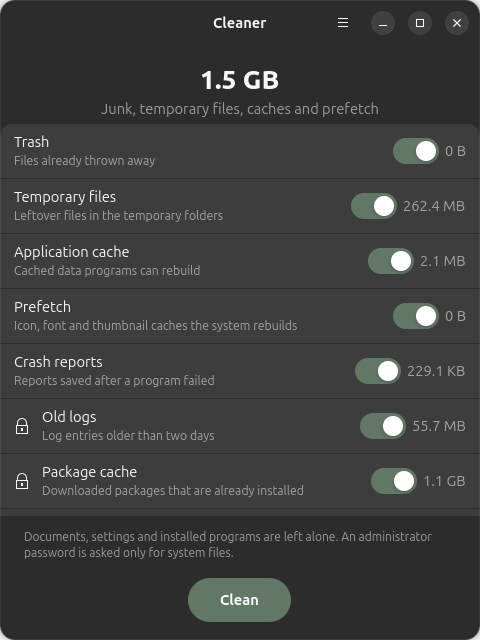

Cleaner for Ubuntu
Free disk space safely

About
Cleaner finds junk on every drive and removes only what is safe to remove. It is part of HRHsofts Apps and is installed for every account on this computer, like the built-in applications.
- Trash on every drive, old temporary files, crash reports and previews of deleted files
- Caches of every browser and program, one by one, kept while the program runs
- Developer caches, old system logs, package cache, unused packages, old Snap and Flatpak versions
- Program logs, Docker leftovers and shortcuts of removed programs
- Uninstall applications completely, with what only they needed and the files they left in your home folder
- Leftovers of programs that were removed earlier
- Storage overview, large file finder and duplicate file finder
- Choose which programs start when you log in
- Exclusions, adjustable ages and automatic daily or weekly cleaning
Install
From the terminal (adds the signed HRHsuite repository so Cleaner keeps itself updated):
wget -qO- https://hrhsofts-repos.github.io/apt/install.sh | sudo sh -s -- cleanerIf the repository is already set up, or on HRHsofts Ubuntu:
sudo apt install hrhsofts-cleanerOr download the .deb and install it with App Center or sudo apt install ./hrhsofts-cleaner_2.2.3-1_all.deb.
- Package
hrhsofts-cleaner- Version
- 2.2.3
- Released
- 2026-11-09
- Size
- 123.3 KB
- SHA-256
6585f5c1c53f3dbd8d7cf36c734acd1c1470ac4cae8af129c89dbb8239b58e27- License
- GNU GPL 3.0 or later (free software)
- Requires
- Ubuntu 26.04 or later, 64-bit (amd64)
What's new
Version 2.2.3 · 09 Nov 2026
- Check for Updates in the main menu: new versions are downloaded from the HRHsuite update service and installed after one password prompt
- A notification offers new versions automatically, at most once a day
Version 2.2.2 · 08 Nov 2026
- Safer removal: folders are opened without following links, nothing on another drive, network share or mounted folder inside a cleaned folder is touched, and every item may only remove things inside its own folders
- Old system temporary files can no longer be redirected elsewhere by a link swapped in while they are removed
- Broken shortcuts: programs in your home folder are found by the automatic cleaning too
- Leftovers of removed programs: never keys, passwords or shell settings, never folders changed since the program went or that hold a profile, and never cleaned automatically
- Program logs: only files that look like logs; rotated system logs: never open or new ones
- Unused packages: nothing is removed when apt would also remove other packages
- Previews of files on network shares are kept; trash folders follow the trash specification
- New browsers (LibreWolf, Floorp, Waterfox, Zen) and developer caches (pre-commit, sccache, TypeScript, NuGet); --version
- The command line never cleans or uninstalls without --yes when nobody can answer; new --clean --dry-run lists what would be removed
- New item: unused Flatpak runtimes of your own account, cleaned without a password
Version 2.2.1 · 29 Oct 2026
- HRHsofts applications are shown as part of the system and protected, like Cleaner
- Removing another program can no longer take an HRHsofts application with it
Version 2.2.0 · 29 Oct 2026
- New Apps page: uninstall Ubuntu packages, Snaps, Flatpaks, AppImages and web app launchers
- Uninstalling also removes packages only that program needed and, if you choose, its settings, data and caches
- Parts of the system and Cleaner itself are protected and cannot be removed
- New item: leftovers of programs that were removed earlier
- Command line: --apps and --uninstall
Version 2.1.0 · 29 Oct 2026
- New Startup page: switch off, add or remove programs that start at login
- Program logs: old log files kept by applications such as editors and chat apps
- Docker: untagged images, build cache and, if you choose, unused images
- Broken shortcuts: launchers and login items of programs that were removed
All HRHsofts apps · Get HRHsofts Ubuntu with Cleaner preinstalled